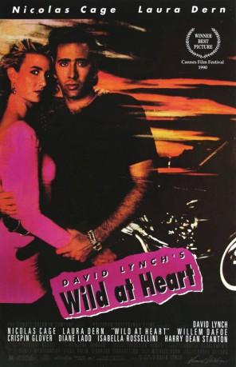
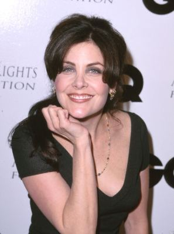
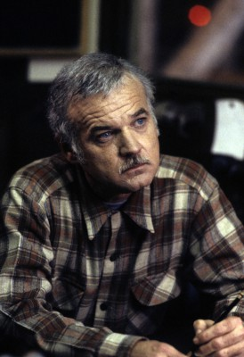

#5326 Wild at Heart - Die Geschichte von Sailor und Lula
Alternativ: Wild at Heart
Auszeichnungen: für 1 Oscars nominiert
 
 IMDB-Wertung: 7.2 / 10
IMDB-Wertung: 7.2 / 10  Metascore: 0
Metascore: 0 
Lula's psychopathic mother goes crazy at the thought of Lula being with Sailor, who just got free from jail. Ignoring Sailor's probation, they set out for California. However their mother hires a killer to hunt down Sailor. Unaware of this, the two enjoy their journey and themselves being together... until they witness a young woman dying after a car accident - a bad omen.
Jahr: 1990
Dauer: 125 Minuten
FSK: 16
Land: USA Studio: Samuel Goldwyn Company, TheTonspuren: DTS - ,
Untertitel:
Auflösung: 1080p (1920x816) Größe: 16076 MB
Genre: Thriller, Drama, Komödie, Krimi
Regisseur:  David Lynch
David Lynch
Drehbuch: Scott Neustadter
Soundtrack:
Darsteller:
 Nicolas Cage als Sailor Ripley
Nicolas Cage als Sailor Ripley Laura Dern als Lula Fortune
Laura Dern als Lula Fortune Willem Dafoe als Bobby Peru
Willem Dafoe als Bobby Peru J.E. Freeman als Marcelles Santos
J.E. Freeman als Marcelles Santos Crispin Glover als Dell
Crispin Glover als Dell Diane Ladd als Marietta Fortune
Diane Ladd als Marietta Fortune Calvin Lockhart als Reggie
Calvin Lockhart als Reggie Isabella Rossellini als Perdita Durango
Isabella Rossellini als Perdita Durango Harry Dean Stanton als Johnnie Farragut
Harry Dean Stanton als Johnnie Farragut Grace Zabriskie als Juana Durango
Grace Zabriskie als Juana Durango-  Sherilyn Fenn als Girl in Accident
- Marvin Kaplan als Uncle Pooch
 William Morgan Sheppard als Mr. Reindeer
William Morgan Sheppard als Mr. Reindeer David Patrick Kelly als Dropshadow
David Patrick Kelly als Dropshadow Freddie Jones als George Kovich
Freddie Jones als George Kovich- John Lurie als Sparky
-  Jack Nance als 00 Spool
 Pruitt Taylor Vince als Buddy
Pruitt Taylor Vince als Buddy- Gregg Dandridge als Bob Ray Lemon
- Glenn Walker Harris Jr. als Pace Fortune
- Frances Bay als Madam
- Lisa Ann Cabasa als Reindeer Dancer
 Frank Collison als Timmy Thompson
Frank Collison als Timmy Thompson- Brent David Fraser als Idiot Punk
 Sheryl Lee als Good Witch
Sheryl Lee als Good Witch- Daniel Quinn als Young Cowboy
 Scott Coffey als Billy , scenes deleted
Scott Coffey als Billy , scenes deleted- Tommy G. Kendrick als Red , scenes deleted
 Bellina Logan als Beany Thorn , scenes deleted
Bellina Logan als Beany Thorn , scenes deleted- Albert Popwell als Barkeeper at Zanzibar , scenes deleted
- Michele Seipp als Girl at Zanzibar , scenes deleted
 Tracey Walter als Traveller , scenes deleted
Tracey Walter als Traveller , scenes deleted- Debra Lamb als Fire Eater at Party , uncredited
- Blair Bruce Bever als Hotel Custodian
- Sally Boyle als Aunt Rootie
- Peter Bromilow als Hotel Manager
- Eddy Dixon als Rex
- Cage S. Johnson als Man at Shell Station
- Valli Leigh als Mr. Reindeer's Resident Valet #2
- Nicholas Love als Man in Wheelchair
- Mia M. Ruiz als Mr. Reindeer's Resident Valet #1
- Charlie Spradling als Irma
- Billy Swan als Billy Swan
- KoKo Taylor als Singer at Zanzibar
- Ed Wright als Desk Clerk
 Darrell Zwerling als Singer's Manager
Darrell Zwerling als Singer's Manager- Zachery Berger als Man in Gents' Room , scenes deleted
- Jack Jozefson als Chet , scenes deleted
- Shawne Rowe als Waitress , scenes deleted
- Bob Terhune als Earl Kovich , scenes deleted
Datei: X:\1990\Wild at Heart - Die Geschichte von Sailor und Lula (1990, FSK16, 1920x816).mkv seit 12.01.2017
Festplatte: HD 1987-1991
 Es gibt insgesamt 52 Filme in der Gruppe '1990'
Es gibt insgesamt 52 Filme in der Gruppe '1990'